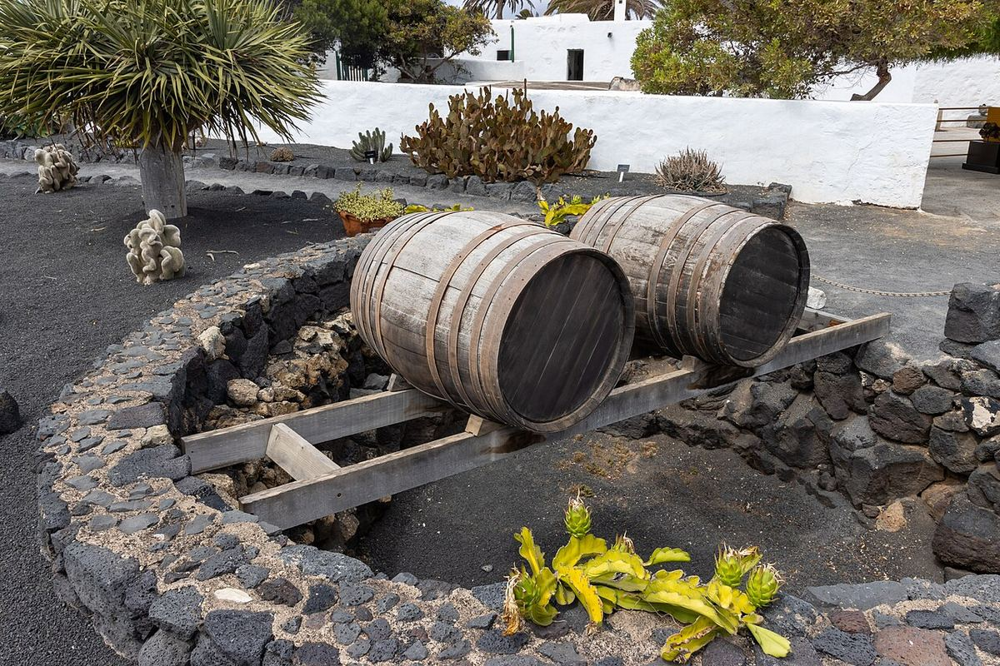

ROSSO
Cantina di Lanzarote fondata nel 1775, una delle più antiche delle Canarie, nota per i vini di Malvasía Volcánica coltivata in buche scavate nella cenere vulcanica.

Bodegas El Grifo fu fondata nel 1775 nel comune di San Bartolomé, a Lanzarote, ed è tra le cantine più antiche delle Canarie e della Spagna. La sua storia iniziò pochi decenni dopo le grandi eruzioni del Timanfaya (1730-1736), che ricoprirono gran parte dell'isola di cenere e lapilli e trasformarono completamente la sua agricoltura. La cantina ospita un museo del vino con attrezzi e documenti storici.
A Lanzarote la vite si coltiva sul picón o rofe, lo strato di cenere vulcanica che copre il terreno e trattiene la scarsa umidità. In zone come La Geria, ogni vite è piantata sul fondo di una buca scavata nella cenere fino a raggiungere la terra fertile, ed è protetta dagli alisei da un piccolo muretto di pietra a semicerchio. Ne risulta uno dei paesaggi viticoli più singolari al mondo. La fillossera non è mai arrivata sull'isola, per cui le viti sono a piede franco.
La varietà simbolo è la Malvasía Volcánica, con cui El Grifo produce bianchi secchi, semidolci e dolci, oltre a vini liquorosi tradizionali. La cantina produce anche rossi di Listán Negro, rosati e vini da altre varietà canarie. Lo stile dei suoi bianchi unisce profumi floreali e fruttati a una spiccata sensazione salina e vulcanica.
La cantina dispone di un museo del vino aperto al pubblico e propone visite con degustazione.